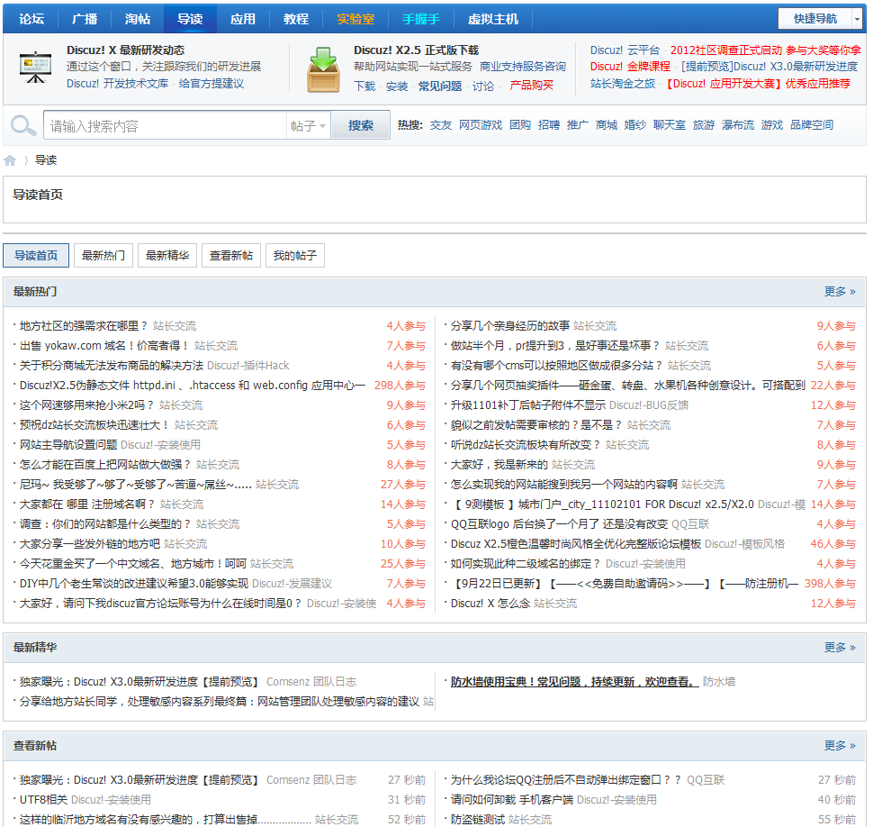

导读
信息广泛、庞大的社区就像一个大容器，信息太繁杂反而让会员一头雾水，不知道该点击哪个版块，该看什么信息。导读很好的解决了内容庞杂问题，能自动将社区最具争议性、最热门的精华帖子展示给用户，从而达到增加可读内容，延长用户停留时间的目的。
导读首页：导读首页汇集了最新热门、最新精华、新帖以及我的帖子，可以通过导读来查看自己想要查看的帖子
最新热门:当用户回复、点评、评论、收藏、分享主题时，会给主题增加热度值，最新热门将自动聚合网站热度值达到热度值下限的热帖（热度值下限在后台 全局->站点功能->导读设置）
最新精华:调取网站最新四条精华帖
查看新帖:网站新主题列表，按时间倒序排列
我的帖子:用户登录后，可查看自己发表的主题、回复和点评，同时可以按照版块、关键字和帖子类型来筛选不同状态（已发表、草稿、关闭、待审核、已忽略、回收站）的主题